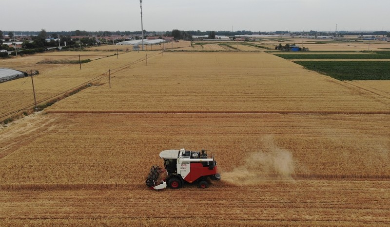
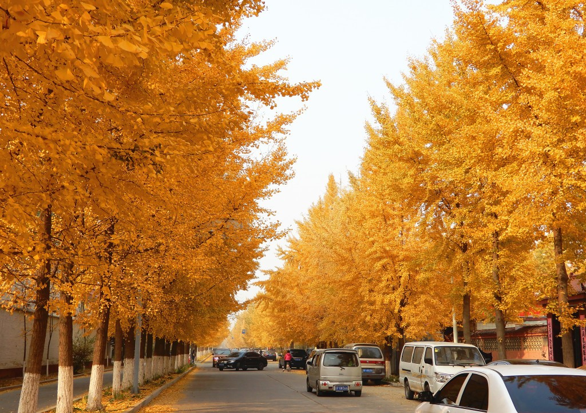
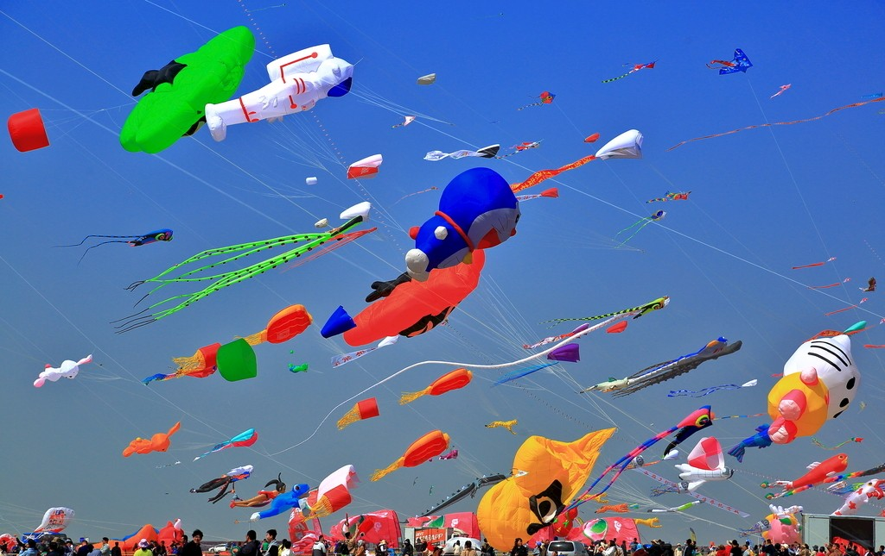

金色丰收的潍坊之秋
秋天是潍坊最舒适的季节，天高云淡，气候宜人，田野里一片丰收景象，城市被金黄的落叶装点得格外美丽。

浮烟山秋景
浮烟山层林尽染，红叶黄叶交织，美不胜收。

潍坊郊外农田一片金黄，农民忙着收割成熟的庄稼。

市区多条街道的银杏树变黄，形成金色长廊。

秋日风筝
秋风起，正是放风筝的好时节，广场上风筝飞舞。
秋季推荐活动
赏秋摄影
推荐地点: 浮烟山、人民公园银杏林
最佳时间: 10月下旬至11月上旬
放风筝
最佳地点: 风筝广场、人民广场
特色: 秋风稳定，适合各类风筝放飞
农事体验
推荐项目: 摘苹果、挖地瓜、收玉米
地点: 潍坊周边农场
户外运动
推荐活动: 骑行、徒步、登山
路线: 白浪河绿道、浮烟山步道
秋季天气指南
九月
平均温度: 18°C - 28°C
穿衣建议: 长袖衬衫+薄外套
特点: 秋高气爽，昼夜温差大
十月
平均温度: 12°C - 22°C
穿衣建议: 毛衣+外套
特点: 气候宜人，适合户外活动
十一月
平均温度: 5°C - 15°C
穿衣建议: 厚外套+围巾
特点: 逐渐转冷，偶有寒潮